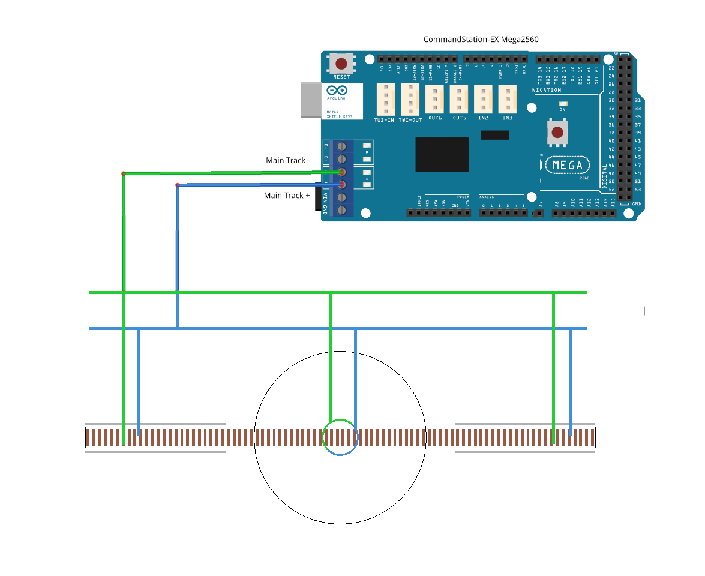
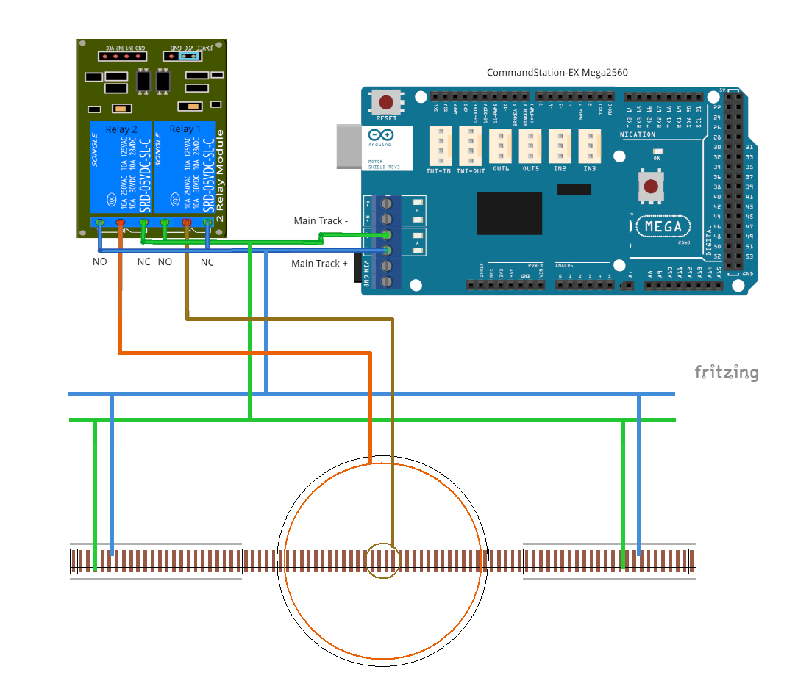

Layout Connections and Wiring¶

On this page we hope to outline various different ways to connect your turntable to Turntable-EX and your layout to ensure correct DCC phase alignment with the surrounding tracks.
Given Turntable-EX is in its infancy at the time of writing, there will likely be plenty of other options available or in use that we’ve not been made aware of as yet. We will capture those here in due course.
Split ring connection¶
This first example demonstrates the connection commonly used in commercial turntables, whereby the connection from the track to the turntable bridge is provided by a centre wiper ring or contact that is split into two 180 degree halves.
Wiring these turntables is straight forward, and there is no requirement for either phase switching relays or an auto reverser of any sort.
Phase switching happens automatically with the rotation of the turntable.
{kind=link}
Centre connection rings¶
This next example uses a pair of wiper rings or contacts in the centre of the turntable similar to the above scenario, except that both rings cover the full 360 degree rotation, and as such do not provide automatic phase switching.
In this example, we have demonstrated the use of the phase switching relays to solve this problem.
The main track positive (+ blue) connection from your CommandStation gets connected to the normally closed (NC) input of relay 1, and the normally open (NO) input of relay 2.
Conversely, the main track negative (- green) get connected to the normally open (NO) of relay 1, and normally closed (NC) of relay 2.
The common input of each relay is connected to the appropriate centre ring of the turntable to ensure that the phase is in alignment with the adjoining tracks.
In this scenario, with the relays in their default inactive state, the CommandStation + will connect to the brown outer ring, and the - will connect to the green inner ring.
Assuming that the default behaviour of automatic phase switching is enabled, when the turntable rotates 180 degrees, Turntable-EX will automatically activate the relays, resulting in the CommandStation + connecting to the orange inner ring, and the - connecting to the brown outer ring, reversing the phase and preventing a short circuit from occurring.
{kind=link}
Pit rail with centre rings¶
This third example is very similar to the above scenario, except that the pit rail itself is active, with wheel wipers on the bridge deck forming the connection in addition to the central wiper ring or contact.
Again, this scenario does not provide automatic phase switching, and the phase switching relays are used to solve this problem.
As above, the main track positive (+ blue) connection from your CommandStation gets connected to the normally closed (NC) input of relay 1, and the normally open (NO) input of relay 2.
Again, the main track negative (- green) get connected to the normally open (NO) of relay 1, and normally closed (NC) of relay 2.
This time, the common input of each relay is connected to either the pit rail or the centre ring as appropriate to ensure that the phase is in alignment with the adjoining tracks.
In this scenario, with the relays in their default inactive state, the CommandStation + will connect to the brown centre ring, and the - will connect to the green pit rail.
Assuming that the default behaviour of automatic phase switching is enabled, when the turntable rotates 180 degrees, Turntable-EX will automatically activate the relays, resulting in the CommandStation + connecting to the orange pit rail, and the - connecting to the brown centre ring, reversing the phase and preventing a short circuit from occurring.
{kind=link}